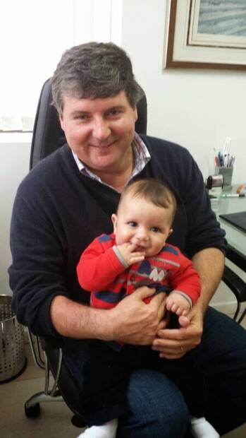
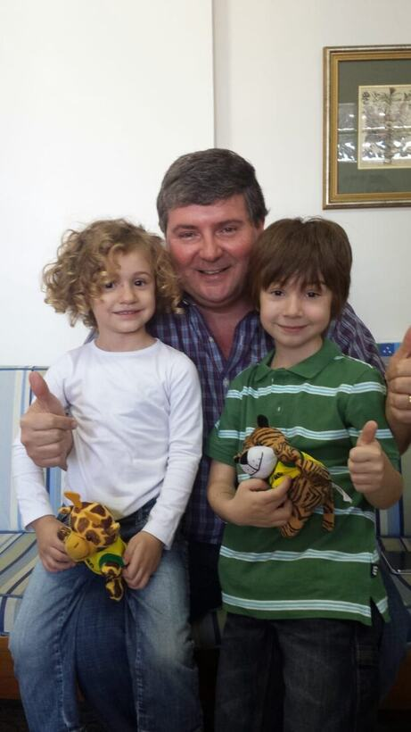
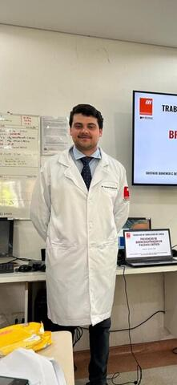
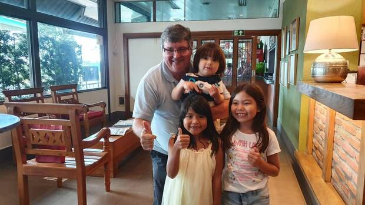
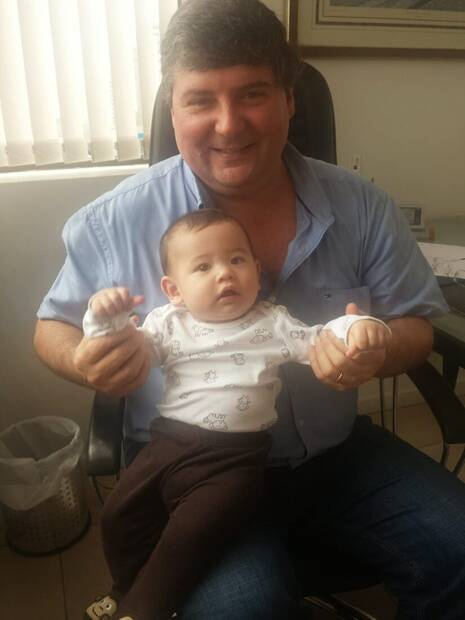
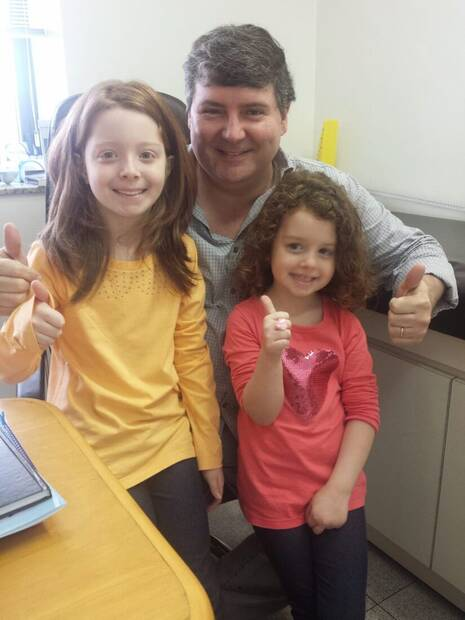
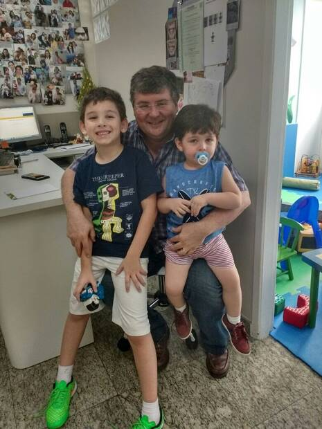
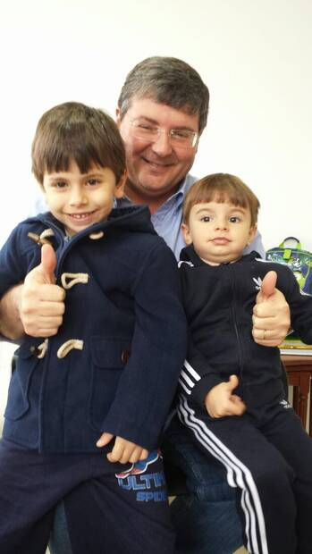
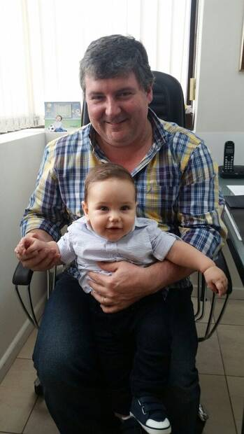
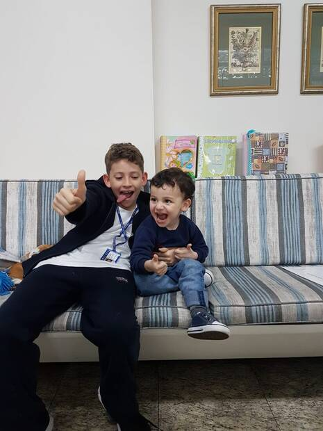

Pediatria
Dr. Ricardo Iunis C. de Paula
CRM 60682
Formado pela Faculdade de Ciências Médicas da Santa Casa de São Paulo
O Dr. Ricardo acompanha a criança consulta a consulta, com a curva de crescimento, o calendário vacinal e o histórico sempre na mesma mão. Puericultura, vacinação e endocrinologia infantil.

Escolher um pediatra é escolher quem vai acompanhar seu filho por anos. Estas são as coisas que fazem diferença numa consulta, e que guiam o atendimento do Dr. Ricardo.
Explicações sem termos complicados, espaço para as suas perguntas e o carinho e a paciência que a criança precisa para se sentir à vontade.
Uma boa consulta examina a criança por inteiro e acompanha os marcos do desenvolvimento, vai muito além de pesar e medir.
Amamentação, introdução alimentar e criação conversados com respeito, para que as orientações façam sentido no dia a dia da sua casa.
Suporte para aquelas dúvidas que aparecem fora do consultório, ajudando a evitar idas desnecessárias ao pronto-socorro.
Consultório limpo, seguro e com cantinho para as crianças, um lugar preparado para receber bem o público infantil.
O mesmo médico acompanhando cada fase, das primeiras vacinas à adolescência, construindo uma relação de confiança que dura.
Acompanhamento do crescimento e desenvolvimento, do recém-nascido ao adolescente, consulta a consulta.
Orientação sobre o calendário vacinal e aplicação com segurança, mantendo a proteção da criança em dia.
Crescimento, puberdade, tireoide, peso e questões hormonais avaliados com cuidado e acompanhamento próximo.
Atendimento clínico para as queixas do dia a dia, com avaliação atenta e conduta na medida certa.
Cada idade tem as suas perguntas. O consultório acompanha a criança do primeiro mês até a adolescência, sempre com o mesmo histórico em mãos.
Peso, amamentação, sono e as dúvidas que aparecem na primeira semana em casa.
Marcos do desenvolvimento, introdução alimentar e o calendário vacinal em dia.
Crescimento, alimentação, sono e as infecções comuns dessa fase de creche e escola.
Curva de crescimento acompanhada de perto, avaliação de peso, estatura e rotina.
Puberdade, questões hormonais e a transição para o cuidado com o próprio corpo.
Do acompanhamento das crianças ao cuidado com a saúde dos adultos, no mesmo consultório.

Formado pela Faculdade de Ciências Médicas da Santa Casa de São Paulo

São anos de crianças que cresceram por aqui, e que continuam voltando. Cada foto é uma família que confiou o cuidado ao Dr. Ricardo.







Sim. O atendimento é particular e as consultas são marcadas por indicação de um médico ou de outra família que já é paciente do consultório. É assim que a agenda se mantém enxuta e as consultas conseguem ser sem pressa.
Do recém-nascido até a adolescência. A ideia do consultório é justamente essa continuidade: a mesma pessoa acompanhando a criança das primeiras vacinas até o fim da adolescência, com todo o histórico em mãos.
Sim. O consultório orienta sobre o calendário vacinal e faz a aplicação com segurança, acompanhando o que já foi tomado e o que ainda falta em cada fase.
O Dr. Gustavo Bunemer C. de Paula atende clínica médica no mesmo consultório, com foco em check-up, medicina preventiva e performance. O contato dele fica na seção de médicos.
Rua Pedro de Toledo, 980, conjunto 84, em Vila Clementino, São Paulo. O mapa com a localização exata está logo abaixo, na seção de atendimento.
Atendimento particular, por indicação. As consultas são feitas por indicação de um médico ou de outra família que já é paciente. É assim que o consultório mantém o cuidado próximo, atento e sem pressa.